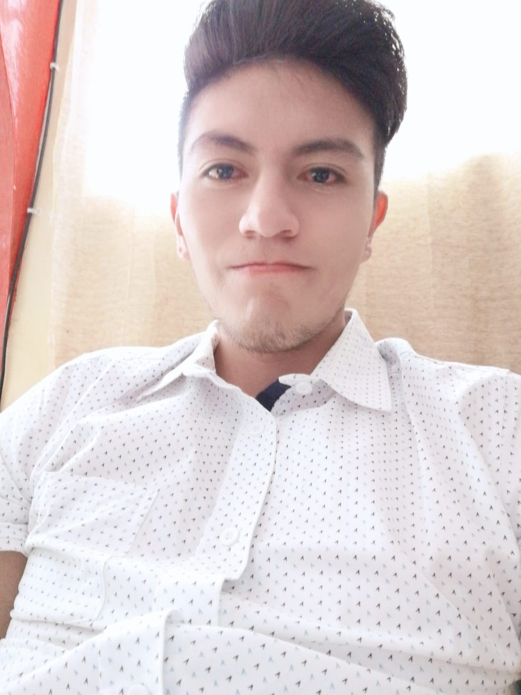

¿Quien soy?
Mi nombre es Juan Fernando Obando Castillo.
Soy estudiante de Ingeniería en Ciencias de la Computación
de la Universidad Politécnica Salesiana,
estoy cursando 5to semestre, tengo 22 años
y cumplo el 11 de Noviembre. Soy una persona segura
en lo que quiero y dedicado a lograrlo, intento cumplir
mis metas una a la vez, me considero una persona amigable,
responsable y en la que se puede confiar,
soy una persona capaz de solucionar mis propios problemas,
e intento ayudar a las personas que lo necesitan,
no me gustan las personas que mienten y que no se esfuerzan,
me gusta aprender constantemente de las personas o de fuentes confiables, soy una persona creativa,
me gusta el deporte como fútbol y Muay-Thai me esfuerzo mucho en todo lo que hago en mis tiempos libres
leo artículos o libros que se basen en mi carrera buscando fortalecer y aumentar mis conocimientos,
me gustan las mascotas tengo un perro que se llama Zeta tiene 2 años y es gentil con las personas,
una de mis frases favoritas es “El éxito llega cuando tus sueños son más grandes que tus excusas”
ya que considero que siempre debemos luchar por lo que queremos, no importa las veces que fallemos,
en algún momento lo lograremos.